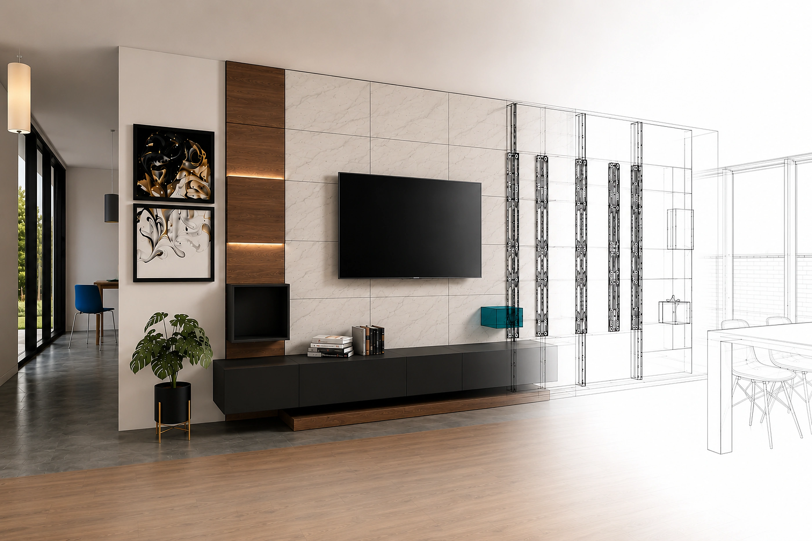
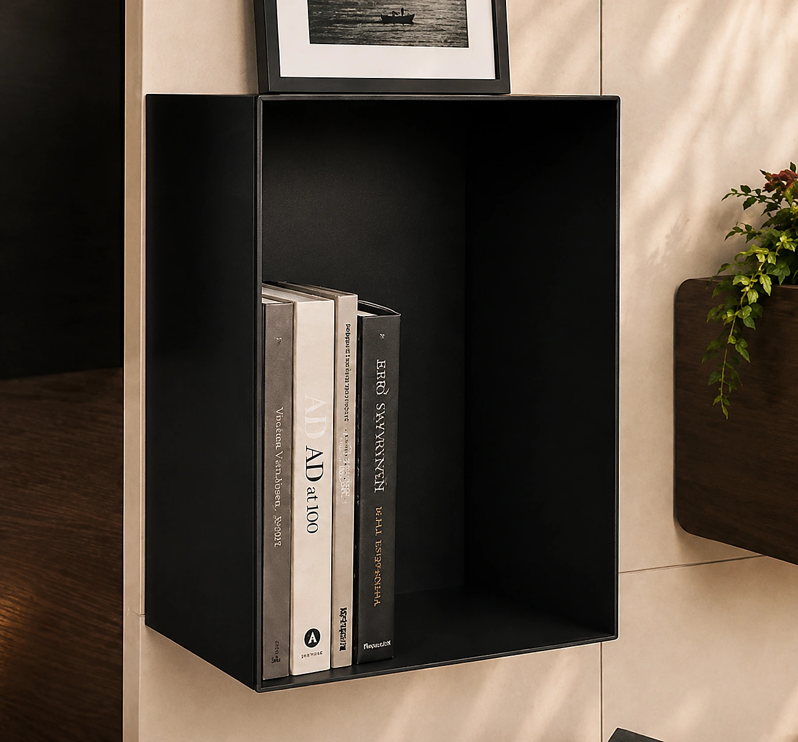
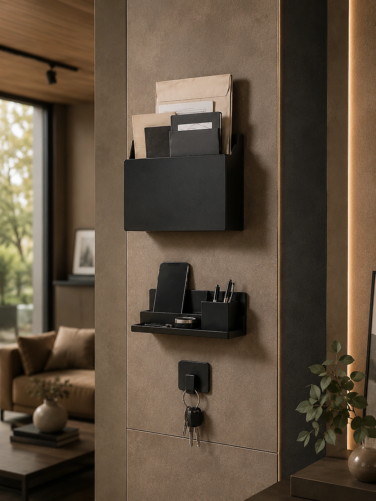
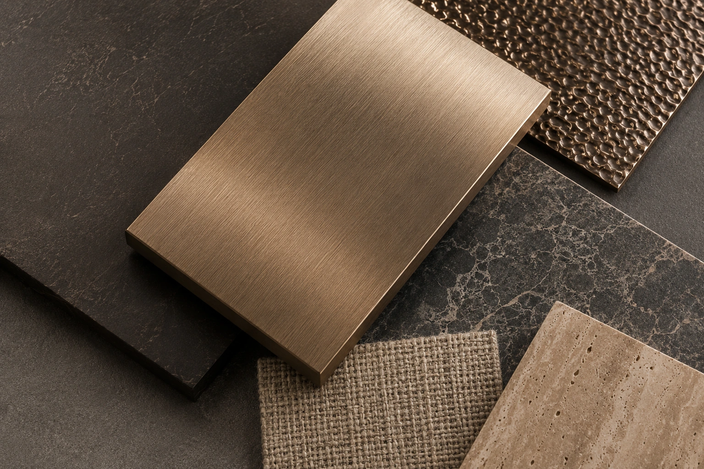
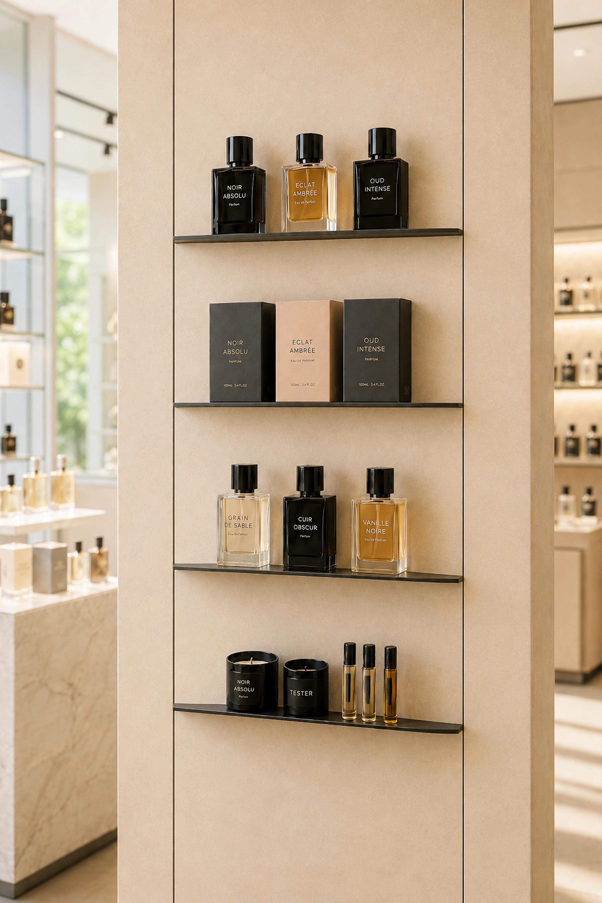
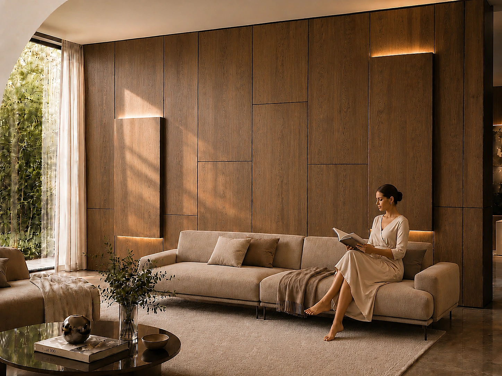

Struttura permanente
La base tecnica rimane installata e ispezionabile.
Pareti progettate per cambiare
Una struttura permanente. Superfici, luce e funzioni che evolvono con chi le vive.
IconicWall separa ciò che resta da ciò che può evolvere: superfici, luce, accessori e funzioni possono cambiare nel tempo senza demolizioni e senza perdere qualità architettonica.
Ogni componente rimane accessibile e sostituibile. La complessità tecnica scompare dietro una superficie continua.

La base tecnica rimane installata e ispezionabile.
Materiali e finiture cambiano senza opere murarie.
Luce, vani e mensole diventano parte dell’architettura.
Nuove funzioni si aggiungono in un gesto.
Un sistema completo, da esplorare attraverso materia, tecnologia e applicazioni.

Flat, Lux, Shelf, Frame e Box.

Organizzare, esporre, decorare.


Una tecnologia, molti linguaggi.

“Progettare uno spazio significa immaginare anche come cambierà.”
IconicWall · Dress your interiors
Inizia un progetto